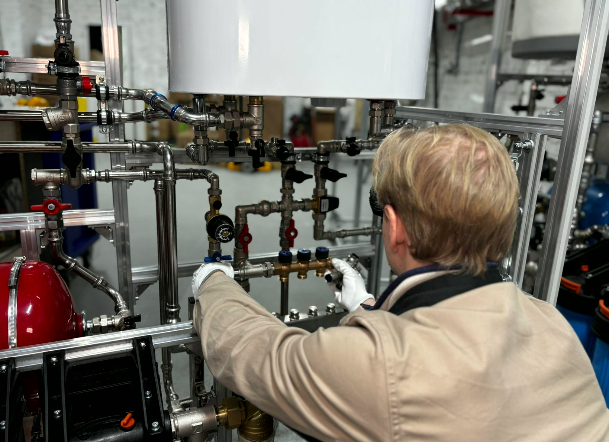
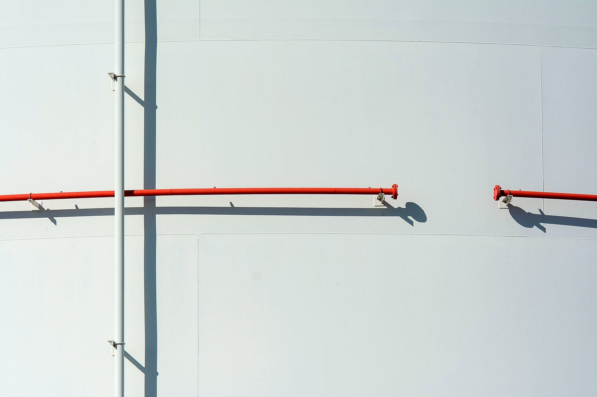
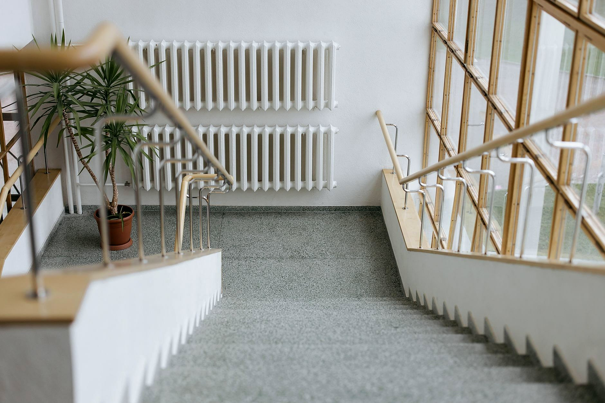
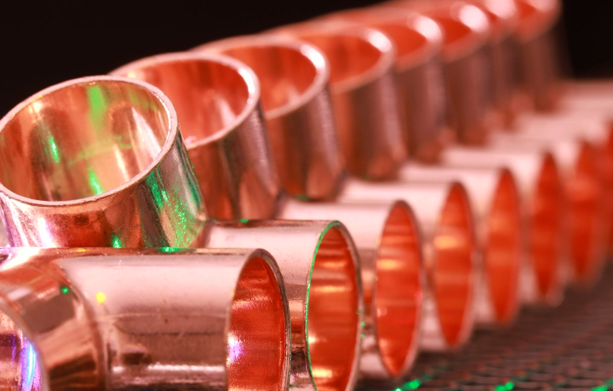
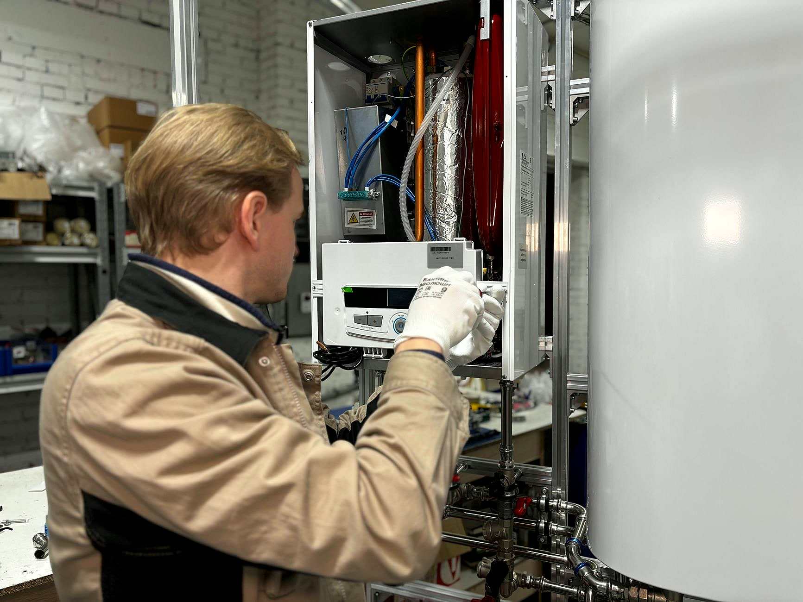
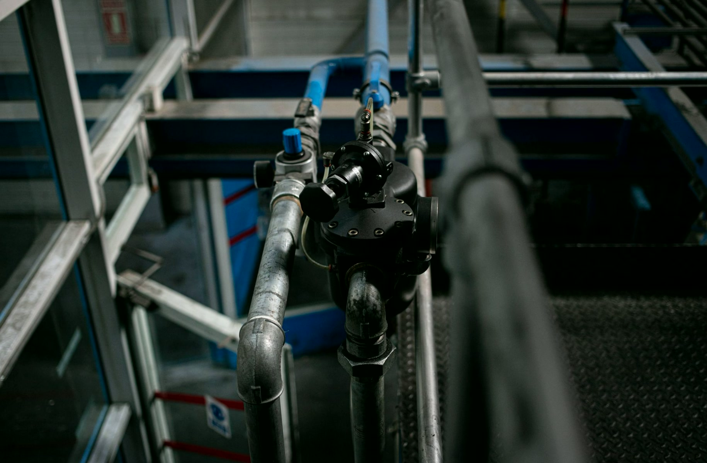

Instalacje, kotłownie i gaz w Słupsku i okolicy
Robimy instalacje w całości: wod-kan, centralne ogrzewanie, kotłownie, gaz, systemy tryskaczowe i hydrantowe.
Zadzwoń teraz +48 605 058 674- Bezpłatna wycena
- Dojazd: Słupsk i okolice
- Gwarancja na robociznę
Z czym do nas dzwonić
Wybierz temat - oddzwonimy i podamy cenę.
Wiesz, na czym stoisz - na każdym etapie
Od pierwszego telefonu do odbioru roboty - krok po kroku.
- 01
Rozmowa o zakresie
Mówisz, co to za obiekt i co ma powstać: instalacja w domu w budowie, wymiana kotłowni, przyłącze, tryskacze. Ustalamy, na jakim etapie jest budynek.
- 02
Wycena i termin
Podajemy cenę zakresu i termin wejścia. Jeśli potrzebna jest dokumentacja albo projekt, mówimy o tym od razu, a nie w trakcie.
- 03
Wykonanie instalacji
Prowadzimy rury, montujemy kocioł albo rozdzielacz, podłączamy urządzenia. Trzymamy się ustalonego zakresu i pilnujemy kolejności prac z innymi ekipami.
- 04
Próba i odbiór
Instalację sprawdzamy pod ciśnieniem, gazową poddajemy próbie szczelności. Dopiero po sprawdzeniu przekazujemy robotę do użytku.
Zakres, w którym pracujemy
Rodzaje instalacji, które wykonujemy na co dzień: od kotłowni i rozdzielaczy po przyłącza, gaz i systemy pożarowe.





Czym się zajmujemy
Roboty, które wykonujemy regularnie - z zakresem opisanym wprost.
- Instalacje wod-kan w budynkachNowe instalacje wodne i kanalizacyjne w budynkach, wewnętrzne i zewnętrzne, oraz wymiana starych instalacji w różnych systemach.Wycena →
- Przyłącza i sieci wod-kanPrzyłącza wodociągowe i kanalizacyjne, budowa sieci wod-kan i kanalizacji deszczowej, modernizacja istniejących odcinków.Wycena →
- Instalacje gazoweProjekt i wykonanie instalacji gazowej, przyłącza gazowe, montaż piecyków i kuchenek.Wycena →
- Kotłownie i centralne ogrzewanieMontaż i wymiana kotłów gazowych, olejowych, elektrycznych oraz na eko-groszek, wymiany całych kotłowni, rozprowadzenie centralnego ogrzewania, montaż i wymiana grzejników.Wycena →
- Instalacje tryskaczowe i hydrantoweSystemy pożarowe w obiektach: instalacje tryskaczowe i hydrantowe, wraz z rozprowadzeniem rur i podłączeniem do źródła wody.Wycena →
- Centralne odkurzaczeInstalacja centralnego odkurzania: rury w stanie surowym, jednostka centralna i gniazda w ścianach.Wycena →
Co mówią klienci
Ocenę i opinie o naszej pracy znajdziesz w wizytówce Google. Zbieramy je od klientów, u których robiliśmy instalacje.
Potrzebujesz fachowca? Wycenimy za darmo.
Odezwij się - umówimy oględziny i usłyszysz konkretną kwotę. Za darmo.